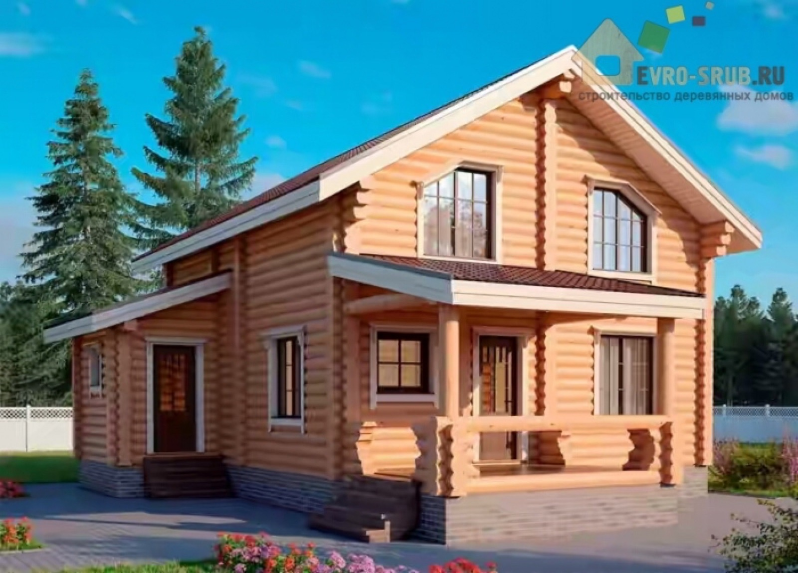
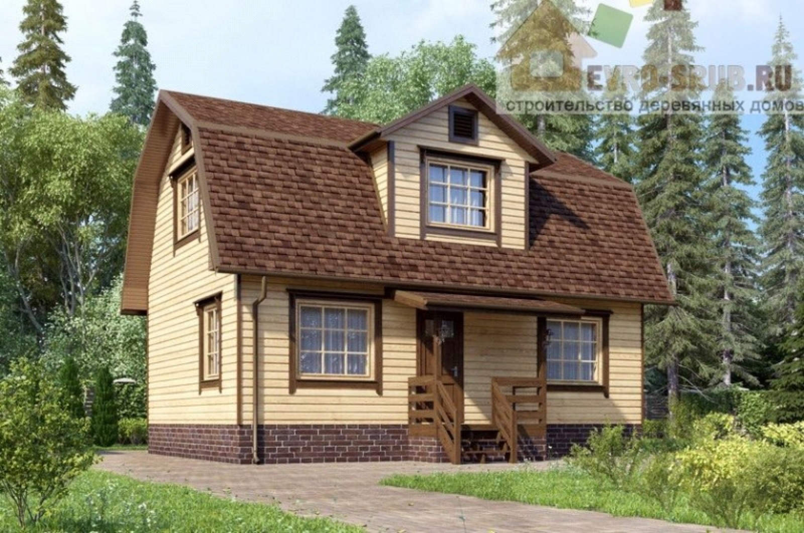
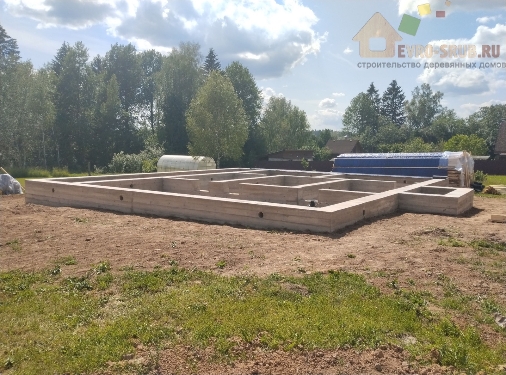
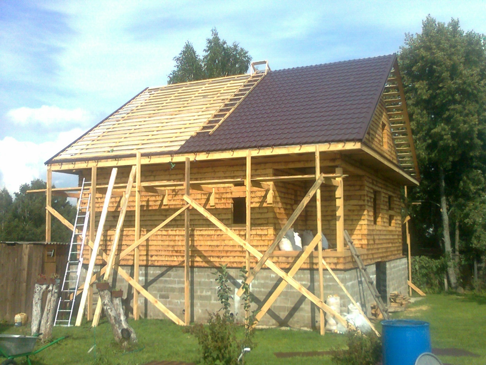
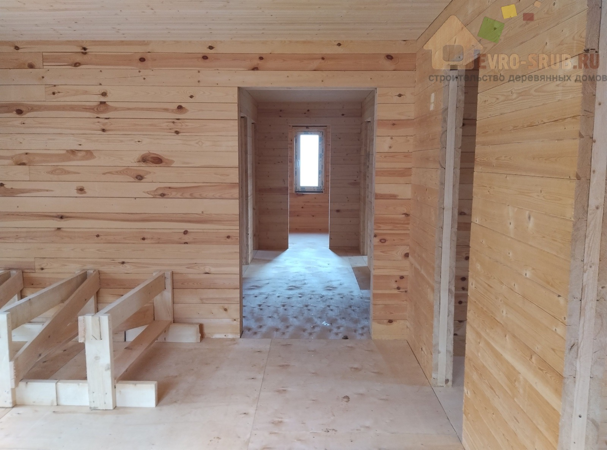

Участок и задача
Уточняем назначение дома, особенности участка и состав работ.
Фундамент, сруб, кровля и отделка — единая команда ведёт объект через все ключевые этапы строительства.
Каждое направление можно заказать отдельно или объединить в единый понятный маршрут: от основания дома до отделки после усадки.

Рубленые дома, бани и дачи из строганного бревна ручной рубки — с вниманием к материалу, рубке и сборке на участке.
Подробнее об услуге
Профилированный брус, готовые решения и адаптация проекта под конкретный участок и задачу семьи.
Подробнее об услуге
Ленточный, свайно‑винтовой, монолитный и железобетонный фундамент с учётом проекта и условий участка.
Подробнее об услуге
Стропильная система, гидроизоляция, обрешётка и кровля — чтобы дом был защищён в любой сезон.
Подробнее об услуге
Отделка, шлифовка, конопатка и защитная обработка древесины — спокойный завершающий этап строительства.
Подробнее об услугеЗаказчик видит последовательность работ и понимает, на каком этапе находится дом.
Уточняем назначение дома, особенности участка и состав работ.
Выбираем и выполняем фундамент под будущий дом.
Изготавливаем стеновой комплект и собираем объект.
Защищаем конструкцию и закрываем тепловой контур.
После усадки выполняем нужные отделочные работы.